JABEL (Justice Advocates Battling Exploitation and Lies) is a grassroots nonprofit helping survivors of human trafficking, sexual assault, and domestic abuse. It's run almost entirely by its founder, Anabel — I connected with her after signing up to volunteer my UX skills through the Taproot platform. She needed help restructuring and redesigning the JABEL website to bring more awareness to survivors and deepen engagement with sponsors, donors, and volunteers.
The redesign unfolded in six phases: a UX audit, defining personas, prioritizing key jobs-to-be-done, defining the information architecture, building wireframes, and — currently underway — building the site itself.
Phase 1 — UX Audit & Evaluation
Before touching the redesign, I audited the existing site for friction. Beyond the usability issues, the biggest gap I flagged to Anabel was this: JABEL's impact wasn't clearly demonstrated anywhere on the site — which made it harder for both survivors and potential donors to fully trust the organization.
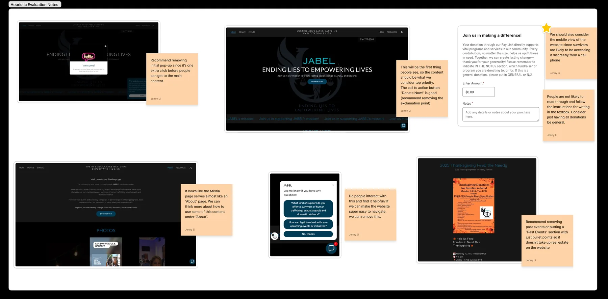
Phase 2 — Defining the Personas
Before touching content or page structure, I wanted us aligned on who actually visits this site and what they're trying to do. I ran a persona-definition workshop with Anabel covering four groups: Survivor, Donor, Volunteer, and Partner. Anabel is a survivor herself, and has also occupied each of the other three roles — so rather than running a full round of discovery interviews, a focused workshop was the right-sized method given the timeline and how much she already knew firsthand.
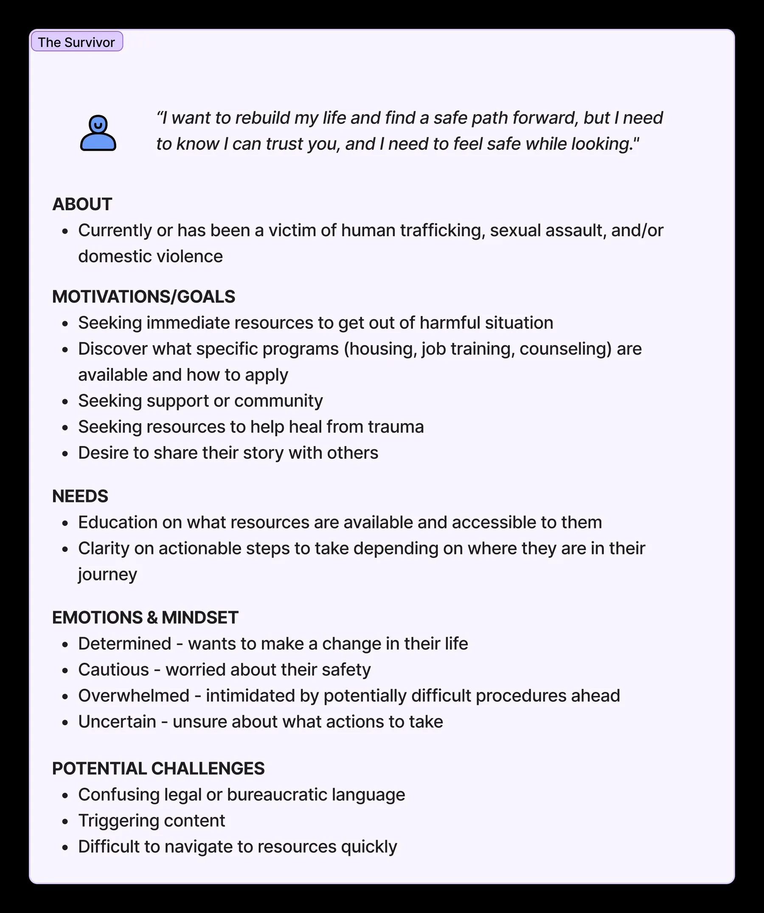
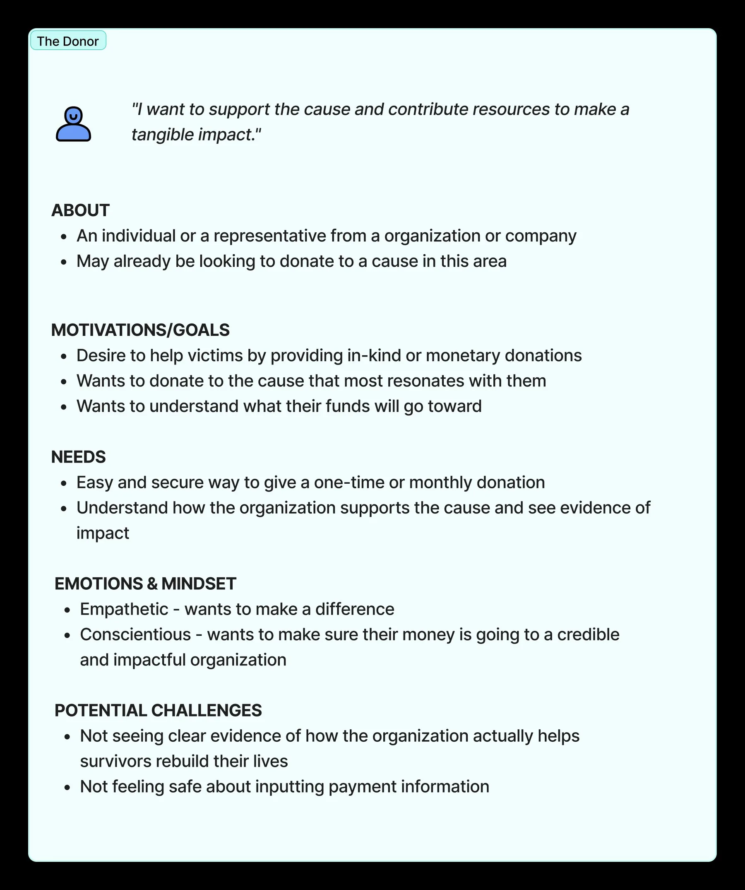
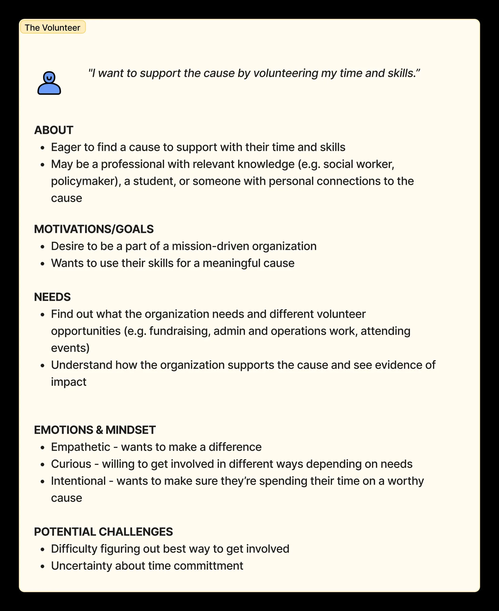
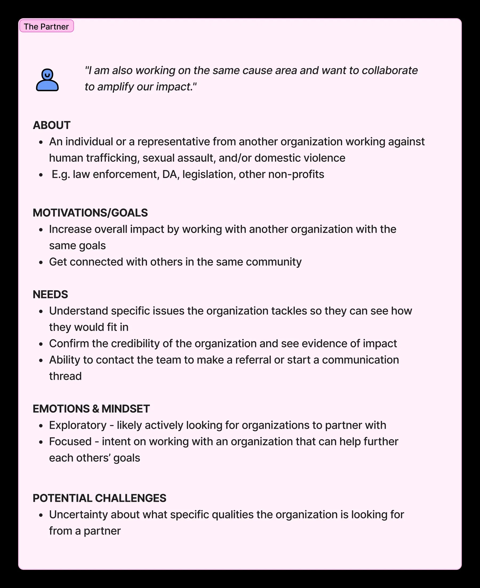
Phase 3 — Prioritizing Key Jobs-to-Be-Done
With the personas settled, I led a brainstorm with Anabel to define and categorize each one's goals and key tasks, then used affinity mapping to group them — and those groups started taking the shape of actual website sections. I deliberately avoided splitting everything strictly by persona, since some needs — like establishing credibility through visible impact — cut across all four.
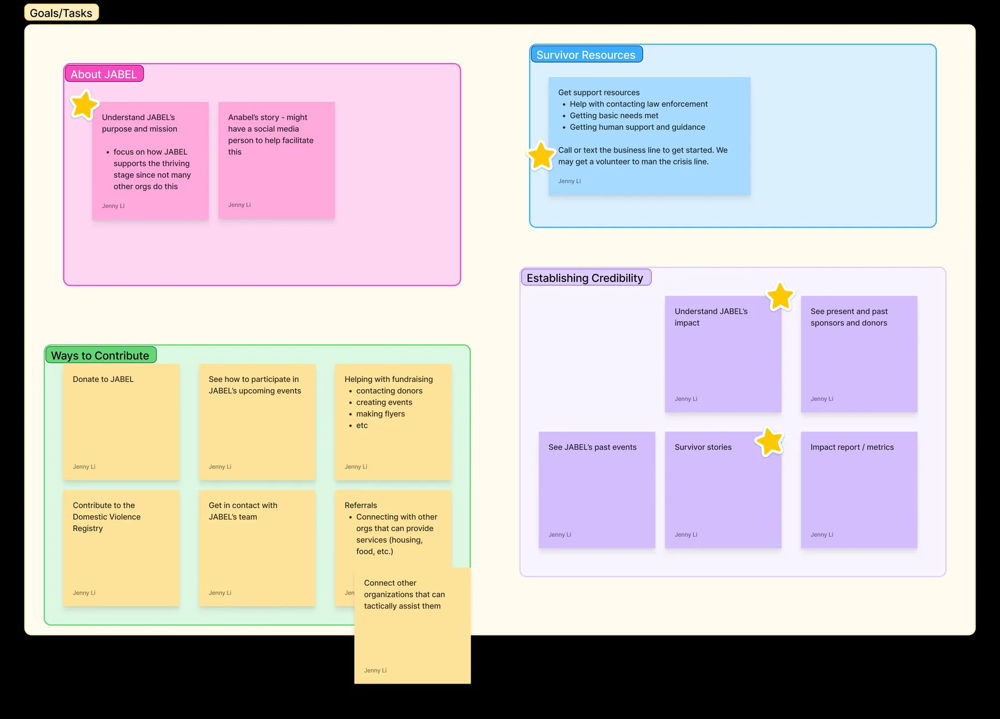
From there, everything went into a spreadsheet to prioritize — the basis for the information architecture that followed.
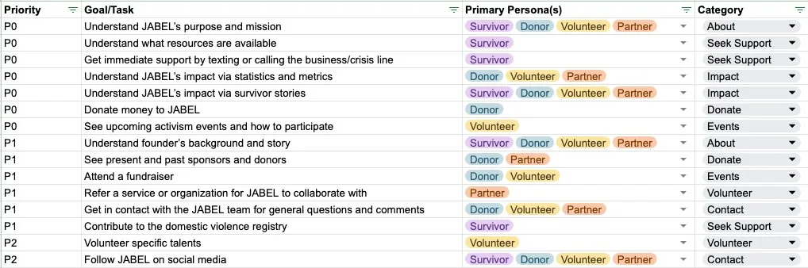
Phase 4 — Defining the Information Architecture
With everything listed and prioritized, the IA came together quickly. The real decisions were about what deserved to be a top-level page, and how the parent-child relationships should work.
Key decisions & recommendations
- Lead the front page with JABEL's focus on thriving, not just surviving — helping people not only get out of harm but build a life they actually control. It's what sets JABEL apart from other organizations in this space.
- Be specific — survivor resources on the front page, measurable impact, real survivor stories and quotes. Specificity builds trust, for survivors and donors alike.
- Emphasize the crisis hotline and exactly how to use it — call or text, and a real person on the other end, not an automated system. That reassurance matters as much as the number itself.
- Give Donate its own top-level page, reachable from anywhere — especially once there's content explaining what a donation actually funds.
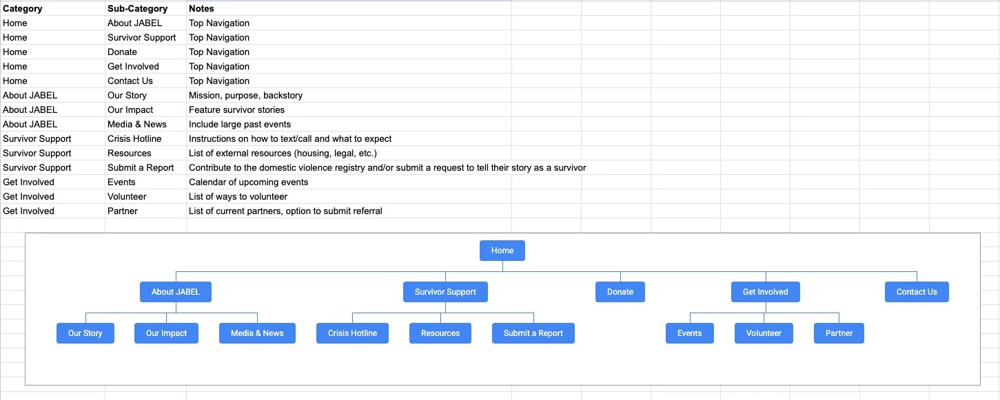
Phase 5 — Creating Wireframes
Before wireframing, I did a light competitive scan of other nonprofit sites — using Gemini to surface examples that included a crisis hotline, to see how they guided someone from the homepage to actually picking up the phone.
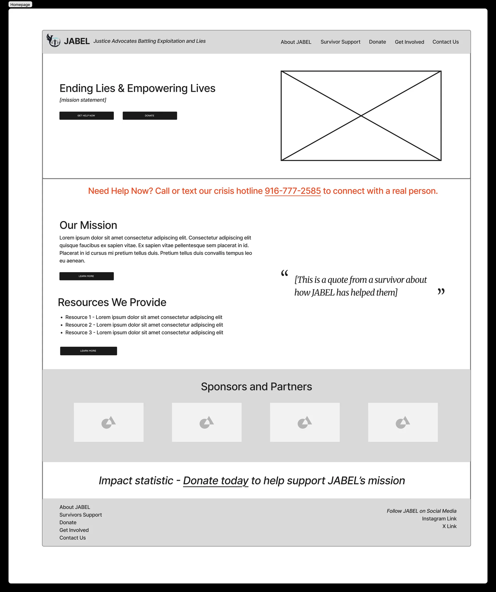
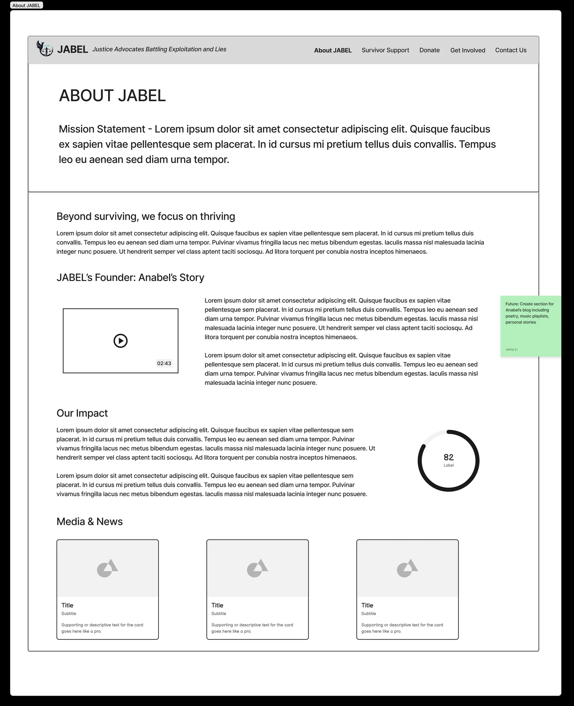
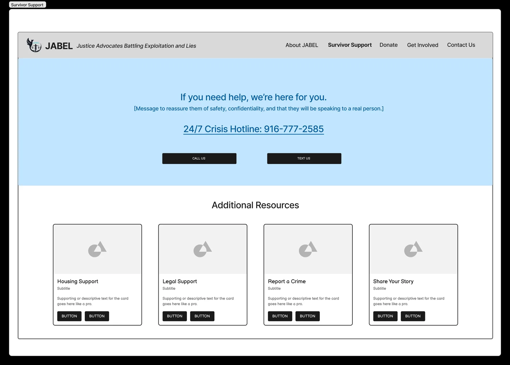
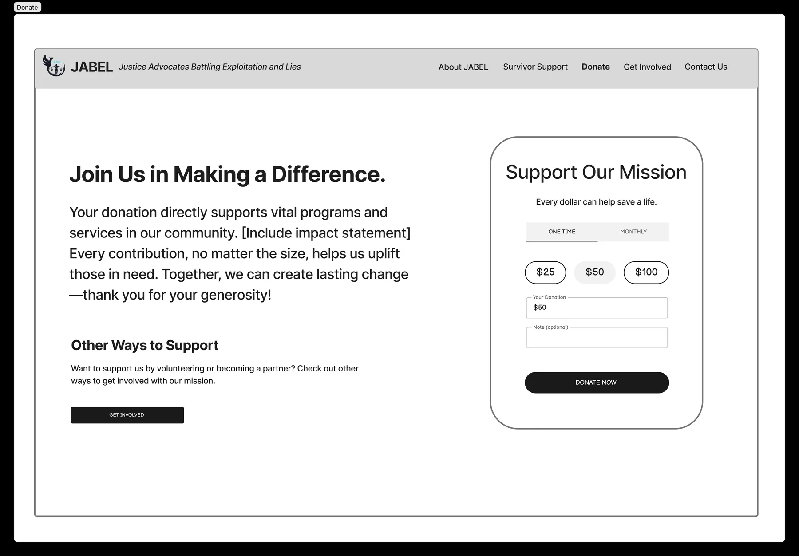
Phase 6 — Building the Website (in progress)
JABEL is moving off its current hosting service, and I'm currently evaluating where to land — weighing how lightweight it is to maintain technically, how much flexibility it gives on visual design, and how well it handles heavy text content for a future blog. Here's an early snippet of the site I'm prototyping in Canva. More to come.
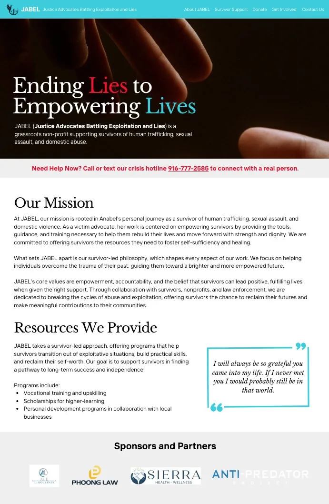